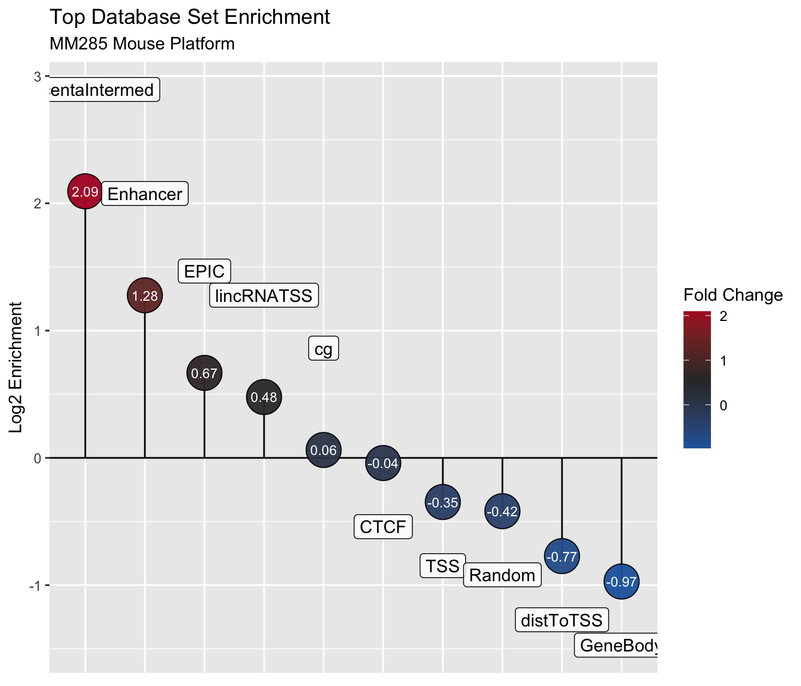

KnowYourCpG
SeSAMe implements an automated discovery tool named KnowYourCpG for discovering hidden biological and technical elements. The goal is to find a link between these elements and observed DNA methylation.
KnowYourCpG
Introduction
KnowYourCpG is a tool for evaluating CpG feature enrichment using Illumina probe IDs. One feature in this tool automates the hypothesis testing by asking whether a set of CpGs (represented by Illumina methylation chip probes) is enriched in certain categories or features. These categories or features can be categorical (e.g., CpGs related to tissue-specific transcription factors) or continuous (e.g., CpG Island density). Additionally, the set of CpGs to which the test will be applied can be categorical or continuous as well.
The set of CpGs that will be tested for enrichment is called the query set, and the set of CpGs that will be used to determine enrichment of a given factor is called the database set. A query set, for example, might be the results of an epigenome-wide association study. We have taken the time to curate our own database sets from a variety of sources that describe different categorical and continuous features such as transcription factor binding sites, CpG density, technical factors, etc.
Additionally, knowYourCpG has support for feature selection and feature engineering, which is currently in development.
library(sesame)
library(SummarizedExperiment)
library(stats4)Input Data
Database Sets
We have organized our database sets in terms of different releases. The listDatabaseSets() function lists the database sets in the most recent release. The release parameter to this function controls which release to list. The user can see the database sets available in Release 2 using the following:
listDatabaseSets()## Accession: KYCG.EPIC.CGI.20210713 (n: NA)
## Accession: KYCG.EPIC.chromosome.hg19.20210630 (n: NA)
## Accession: KYCG.EPIC.chromosome.hg38.20210630 (n: NA)
## Accession: KYCG.EPIC.gene.20210726 (n: NA)
## Accession: KYCG.EPIC.histoneMod.20210819 (n: NA)
## Accession: KYCG.EPIC.mask.hg19.20181001 (n: NA)
## Accession: KYCG.EPIC.mask.hg38.20181001 (n: NA)
## Accession: KYCG.EPIC.probeType.20210630 (n: NA)
## Accession: KYCG.EPIC.seqContext.20210713 (n: NA)
## Accession: KYCG.EPIC.TFBS.20210817 (n: NA)
## Accession: KYCG.HM450.chromosome.hg19.20210630 (n: NA)
## Accession: KYCG.HM450.gene.20210706 (n: NA)
## Accession: KYCG.HM450.mask.hg19.20181001 (n: NA)
## Accession: KYCG.HM450.mask.hg38.20181001 (n: NA)
## Accession: KYCG.MM285.chromHMM.20210210 (n: NA)
## Accession: KYCG.MM285.chromosome.mm10.20210630 (n: NA)
## Accession: KYCG.MM285.designGroup.20210210 (n: NA)
## Accession: KYCG.MM285.gene.20210726 (n: NA)
## Accession: KYCG.MM285.probeType.20210630 (n: NA)
## Accession: KYCG.MM285.seqContext.20210630 (n: NA)
## Accession: KYCG.MM285.seqContextN.20210630 (n: NA)
## Accession: KYCG.MM285.TFBS.20210817 (n: NA)We have provided the getDatabaseSet() function that returns a list of database sets identified by their accessions shown in listDatabaseSets(). When this function is ran for the first time, none of the database sets have been cached. Caching on the local machine is important on two fronts: firstly it limits the number of requests sent to our server, and secondly it limits the amount of time the user needs to wait when re-downloading database sets. For this reason, the first time the user runs getDatabaseSet(), it will take some time to download all of the database sets from a given release. The default directory to which the database set will be cached is in knowYourCpGPackage/databaseSets. Additionally, the user may set a global variable KYCG_DATABASESETS_LOC if they wish to specify an alternative directory. Regardless of the initial request to getDatabaseSet(), the entire given Release (identified by the release parameter) will be cached and stored in a respective sub-directory.
Using a subset of the available database sets, we will download them and load them in into memory using their accessions.
databaseSetNames = c('KYCG.MM285.seqContextN.20210630',
'KYCG.MM285.designGroup.20210210',
'HM450.chromosome.hg19.20210630',
'KYCG.MM285.probeType.20210630')
databaseSets = getDatabaseSets(databaseSetNames, verbose=FALSE)In total, 39 database sets have been loaded from this command.
cat(sprintf("length(databaseSets) = %s database sets", length(databaseSets)))## length(databaseSets) = 39 database setsWe will show the first three for simplicity.
str(databaseSets[1:3])## List of 3
## $ Enhancer: chr [1:58759] "cg36603393_BC21" "cg36605130_BC21" "cg36624203_BC21" "cg36624767_TC21" ...
## $ Random : chr [1:27999] "cg36603791_TC21" "cg36608073_BC21" "cg36608947_BC11" "cg36609796_TC21" ...
## $ EPIC : chr [1:29008] "cg36603848_TC21" "cg36609753_BC21" "cg36609921_TC21" "cg36610885_TC21" ...And display a summary of its contents.
summary(databaseSets[1:3])## Length Class Mode
## Enhancer 58759 -none- character
## Random 27999 -none- character
## EPIC 29008 -none- characterOn subsequent runs of the getDatabaseSet() function, loading specific database sets from the same release will be much faster. These database sets will be persistent between R sessions so long as the directory to which they are downloaded is not deleted. Otherwise, the database sets will have to be downloaded again.
Query Sets
A query set represents probes of interest. It may either be in the form of a character vector where the values correspond to probe IDs or a named numeric vector where the names correspond to probe IDs.
A list of test query sets can be obtained from the following URL.
library(SummarizedExperiment)
MM285.tissueSignature = sesameDataGet('MM285.tissueSignature')
df = rowData(MM285.tissueSignature)
querySet = df$Probe_ID[df$branch == "E-Brain"]This query set represents hypomethylated probes in Mouse brain tissue from the MM285 platform. This specific query set has 71 probes.
## length(querySet) = 71 probesUsing the obtained database sets and query set, the user may analyze their overlap and enrichment.
Functionality
There are many functions in this package that make investigating the biological significance of a set of probes easier.
Obtaining Optional Annotation from each Databse Set
Using the getDatabaseSetOverlap() function, the user can investigate the database sets that overlap with the given query set, the degree of overlap, and any provided annotation.
annotation = getDatabaseSetOverlap(querySet, databaseSets)
head(annotation)The meta column indicates whether the respective database set contains annotation. The nQ and nD columns indicate the length of the query set and database set respectively, and the overlap column indicates the amount of overlap. In some cases, this annotation data.frame will be sparse as not all database sets have the same annotation columns. None of these overlapping database sets have annotation, so no additional columns were returned.
Investigating the Enrichment of Many Database Sets in a Single Query Set
The testEnrichmentAll() function is the main work horse to KnowYourCpG. It tests the enrichment of the given database sets in a single query set. There are four testing scenarios depending on the type format of the query set and database sets. They are shown with the respective testing scenario in the table below.

Four testing scenarios of KnowYourCpG
The testEnrichmentAll() will automate statistical tests and report metrics about each of the the loaded database sets. Another set that is needed for the test is called the universe set. This is the set of all probes for a given platform. It can either be passed in as an argument called universeSet or the platform name can be passed with argument platform. If neither of these are supplied, the universe set will be implied from the probes. In all subsequent runs of testEnrichmentAll() in this vignette, the platform will be specified.
resultsAll = testEnrichmentAll(querySet=querySet,
databaseSets=databaseSets,
verbose=FALSE)
print(head(resultsAll))## estimate p.value test nQ nD overlap p.adjust.fdr
## Enhancer 2.4238684 9.215605e-08 fisher 71 58759 34 3.594086e-06
## cg 1.0440670 7.690410e-02 fisher 71 284862 71 1.000000e+00
## EPIC 1.5884715 1.082081e-01 fisher 71 29008 11 1.000000e+00
## CGI 0.2444814 1.930669e-01 fisher 71 17134 1 1.000000e+00
## PlacentaIntermed 4.2700751 2.091150e-01 fisher 71 981 1 1.000000e+00
## CpGDesity50 0.3822945 2.137862e-01 fgsea 71 297415 71 1.000000e+00
## estimate.rank p.value.rank overlap.rank max.rank mean.rank
## Enhancer 2 1 36 36 18.75
## cg 5 2 37 37 20.25
## EPIC 3 3 34 34 18.50
## CGI 12 4 28 28 18.00
## PlacentaIntermed 1 5 29 29 16.00
## CpGDesity50 11 6 38 38 23.25
## meta
## Enhancer FALSE
## cg FALSE
## EPIC FALSE
## CGI FALSE
## PlacentaIntermed FALSE
## CpGDesity50 FALSEThe output of each test contains at least four variables: the estimate, p-value, type of test, and whether meta data is included in the tested database set. The name of the database set is also recorded as well. By default, the p-value column is sorted.
It should be noted that the estimate (or test statistic) is test dependent and comparison between p-values should be limited to within the same type of test. For instance, the test statistics for Fisher’s exact test and FGSEA are log fold change and the test statistic for Spearman’s test is simply the rank order correlation coefficient. For simplicity, we report all of the test types in one data frame.
The nQ and nD columns identify the length of the query set and the database set, respectively. Often, it’s important to examine the extent of overlap between the two sets, so that metric is reported as well in the overlap column.
Using these results, we can plot a volcano plot and lollipop plot.
plotVolcano(data=resultsAll, title="Database Set Enrichment",
subtitle="MM285 Mouse Platform")
plotLollipop(data=resultsAll, title="Top Database Set Enrichment",
subtitle="MM285 Mouse Platform")
Example Testing Scenarios
The querySet may be a named continuous vector. In that case, either a gene enrichment score will be calculated (if the databaseSet is discrete) or a Spearman correlation will be calculated (if the databaseSet is continuous as well). The three other cases are shown below using biologically relevant examples.
To display this functionality, let’s load two numeric database sets individually. One is a database set for CpG density and the other is a database set corresponding to the distance of the nearest transcriptional start site (TSS) to each probe.
KYCG.MM285.seqContextN.20210630 = getDatabaseSets('KYCG.MM285.seqContextN.20210630', verbose=FALSE)
CpGDesity50 = KYCG.MM285.seqContextN.20210630['CpGDesity50']
distToTSS = KYCG.MM285.seqContextN.20210630['distToTSS']Example 1
Our first test will look at whether the query set is significantly enriched in either of the database sets individually.
resultsCpGDensity = testEnrichmentAll(querySet=querySet,
databaseSets=CpGDesity50,
platform="MM285")
print(resultsCpGDensity)## estimate p.value test nQ nD overlap p.adjust.fdr
## CpGDesity50 0.3822945 0.2417582 fgsea 71 297415 71 0.2417582
## estimate.rank p.value.rank overlap.rank max.rank mean.rank meta
## CpGDesity50 1 1 1 1 1 FALSEresultsTSS = testEnrichmentAll(querySet=querySet,
databaseSets=distToTSS,
platform="MM285")
print(resultsTSS)## estimate p.value test nQ nD overlap p.adjust.fdr
## distToTSS 0.5857876 0.9210789 fgsea 71 303421 71 0.9210789
## estimate.rank p.value.rank overlap.rank max.rank mean.rank meta
## distToTSS 1 1 1 1 1 FALSEBoth of the tests result in a p-value greater than 0.05, so there is little evidence to suggest that either of the query set is enriched in either of these database sets.
Example 2
A third test might be whether there is a significant correlation between these two database sets.
resultsCpGdensityTSS = testEnrichmentAll(querySet=CpGDesity50,
databaseSets=distToTSS,
platform="MM285")
print(resultsCpGdensityTSS)## estimate p.value test nQ nD overlap p.adjust.fdr estimate.rank
## distToTSS 0 1 fgsea 1 303421 0 1 1
## p.value.rank overlap.rank max.rank mean.rank meta
## distToTSS 1 1 1 1 FALSEThis test is statistically significant with a p-value less than 0.05 and a moderately weak negative correlation. It is known in biology that the distance to TSS are negatively correlated with CpG islands, which is shown to be the case here from the data as well.
In the above four examples, the database sets were specified explicitly. This is not necessarily needed as the function can load a default set of database sets based a release specified the release parameter. The default is release=2.
Example 3
We may want to look specifically at query our query set is significantly enriched in the set of all Transcription Factor Binding Sites (TFBS). Let’s first load in the TFBS database set.
databaseSets = getDatabaseSets("KYCG.MM285.TFBS.20210817", verbose=FALSE)Next we can actually perform the test.
resultsTFBS = testEnrichmentAll(querySet=querySet, databaseSets=databaseSets,
platform="MM285", verbose=FALSE)
head(resultsTFBS)Using these sample results, we can plot a volcano plot and lollipop plot.
plotVolcano(data=resultsTFBS, title="Transcription Factor Binding Site Enrichment",
subtitle='MM285 Mouse Platform')## Warning: ggrepel: 44 unlabeled data points (too many overlaps). Consider
## increasing max.overlaps
plotLollipop(data=resultsTFBS, title="Transcription Factor Binding Site Enrichment",
subtitle='MM285 Mouse Platform')
Gene Enrichment Ananlysis
Automating the enrichment test process only works when the number of database sets is small. This is important when targeting all genes as there are tens of thousands of genes on each platform. By testing only those genes that overlap with the query set, we can greatly reduce the number of tests. For this reason, the gene enrichment analysis is a special case of these enrichment tests. We can perform this analysis using the testEnrichmentGene() function.
resultsGene = testEnrichmentGene(querySet, platform="MM285", verbose=FALSE)## [1] "Retrieving 0 databaseSets..."## ExperimentHub not responding. Using backup.head(resultsGene)Using these sample results, we can plot a volcano plot and lollipop plot.
plotVolcano(data=resultsGene, title="Gene Enrichment",
subtitle="MM285 Mouse Platform", n.fdr=TRUE)
plotLollipop(data=resultsGene, title="Top Gene Enrichment",
subtitle="MM285 Mouse Platform", n=10)
For example, this given query set is tissue specific hypomethylation of mouse brain. Rufy3 is shown to be significantly enriched in this set and it is known to be enriched in neurons (https://www.ncbi.nlm.nih.gov/gene/22902).
Feature Engineering
In addition to hypothesis testing, knowYourCpG also uses the curated database sets for feature engineering. We have a pre-curated summarized experiment containing a samplesheet and beta value matrix corresponding to about 467 MM285 samples with 20k probes. The samplesheet includes UIDs pertaining to the sample and several categorical/numerical features. To use this data for a linear model, we will extract the most relevant prevalent features.
se = sesameDataGet('MM285.20Kx467.SE')
samplesheet = colData(se)[, c("Mouse_Age_Months",
"Mouse_Age_Days", "Sex", "Strain_Corrected",
"Tissue_Corrected", 'Genotype')]
betas = assay(se)
print(head(samplesheet))## DataFrame with 6 rows and 6 columns
## Mouse_Age_Months Mouse_Age_Days Sex Strain_Corrected Tissue_Corrected
## <character> <character> <character> <character> <character>
## 1 1 29 Female 129/Sv Colon
## 2 1 31 Male 129/Sv Colon
## 3 17.5 531 Female 129/Sv Colon
## 4 16 497 Male 129/Sv Colon
## 5 1 29 Female 129/Sv Colon
## 6 18 542 Female 129/Sv Colon
## Genotype
## <character>
## 1 WT
## 2 WT
## 3 WT
## 4 WT
## 5 WT
## 6 WTWe have found that it is incredibly computationally expensive to perform a linear model/generalized linear model on a feature set of individual CpGs. Additionally, interpreting the mechanism the significantly contributing CpGs is non-trivial due to their complex interactions. We hope to leverage these pre-curated database sets by using their beta value summary statistics as features instead.
We will calculate the summary statistics for the betas matrix using a list of database sets.
databaseSets = getDatabaseSets(databaseSetNames, verbose=FALSE)
statistics = calcDatabaseSetStatisticsAll(betas, databaseSets=databaseSets)
head(statistics[, 1:5])We will look at the mean of each database set.
statistics = statistics[, grepl("mean", colnames(statistics))]
head(statistics[, 1:5])Just from the few database set means above, we can see that CpG islands are consistently hypomethylated, which is consistent with known biology.
Using the samplesheet and beta values, we can create a singular data for linear models. Each categorical variable should be caste as a factor with a reference level. Each numerical variable should be expressed appropriately as well.
data = cbind(data.frame(samplesheet), statistics)
data$Sex = relevel(factor(data$Sex), 'Female')
data$Strain_Corrected = relevel(factor(data$Strain_Corrected), '129/Sv')
data$Tissue_Corrected = relevel(factor(data$Tissue_Corrected), 'Colon')
data$Genotype = relevel(factor(data$Genotype), 'WT')
data$Mouse_Age_Days = as.numeric(data$Mouse_Age_Days)
data$Mouse_Age_Months = as.numeric(data$Mouse_Age_Months)A linear model can finally be constructed using this data. Since there are only 20 samples, we will use use four of the database summary statistics.
model = lm(Mouse_Age_Days ~ Sex + Strain_Corrected + Tissue_Corrected +
Genotype + `CGI-mean` + `CTCF-mean` + `Clock-mean` +
`SNP-mean` + `SpermMeth-mean` + `VMR-mean`, data=data)
summary(model)##
## Call:
## lm(formula = Mouse_Age_Days ~ Sex + Strain_Corrected + Tissue_Corrected +
## Genotype + `CGI-mean` + `CTCF-mean` + `Clock-mean` + `SNP-mean` +
## `SpermMeth-mean` + `VMR-mean`, data = data)
##
## Residuals:
## Min 1Q Median 3Q Max
## -560.89 -53.44 -5.61 38.85 506.67
##
## Coefficients: (1 not defined because of singularities)
## Estimate
## (Intercept) -2380.62
## SexMale 60.06
## Strain_Corrected129-C57 Mixture 41.64
## Strain_Corrected129S1/SvlmJ -131.32
## Strain_CorrectedA/J -163.98
## Strain_CorrectedAKR/J -109.23
## Strain_CorrectedAthymic_Nude -248.68
## Strain_CorrectedBALB/cJ -124.78
## Strain_CorrectedBTBR_T+ ITpr3tf/J -148.92
## Strain_CorrectedC3H/HeJ -131.69
## Strain_CorrectedC57BL/10J -186.93
## Strain_CorrectedC57BL/6J 81.84
## Strain_CorrectedC57BL/6NJ -194.02
## Strain_CorrectedC57L/J -103.21
## Strain_CorrectedC58/J -218.37
## Strain_CorrectedCAST/EiJ -198.39
## Strain_CorrectedCBA/J -151.89
## Strain_CorrectedDBA/1J -113.94
## Strain_CorrectedDBA/2J -136.09
## Strain_CorrectedFVB/NJ -178.02
## Strain_CorrectedKK/HiJ -203.66
## Strain_CorrectedLP/J -153.80
## Strain_CorrectedMixed 74.85
## Strain_CorrectedMOLF/EiJ -291.90
## Strain_CorrectedNOD/ShiLtJ -176.53
## Strain_CorrectedNSG -219.59
## Strain_CorrectedNZB/BINJ -156.81
## Strain_CorrectedNZO/HlLtJ -169.46
## Strain_CorrectedNZW/LacJ -174.28
## Strain_CorrectedPWK/PhJ -292.74
## Strain_CorrectedWSB/EiJ -90.21
## Tissue_CorrectedCecum -66.86
## Tissue_CorrectedEsophagus 46.50
## Tissue_CorrectedFat 117.13
## Tissue_CorrectedFetal Brain 74.62
## Tissue_CorrectedFetal Intestine 76.42
## Tissue_CorrectedFetal Limb 54.05
## Tissue_CorrectedFrontal Lobe Brain 109.26
## Tissue_CorrectedHeart 109.46
## Tissue_CorrectedHind Brain 198.13
## Tissue_CorrectedKidney 172.79
## Tissue_CorrectedLiver -26.65
## Tissue_CorrectedLung 126.91
## Tissue_CorrectedMuscle 117.13
## Tissue_CorrectedOvary 131.78
## Tissue_CorrectedPlacenta -446.97
## Tissue_CorrectedSmall Intestine -42.09
## Tissue_CorrectedSpleen -141.38
## Tissue_CorrectedStomach 172.22
## Tissue_CorrectedTail 80.72
## Tissue_CorrectedTestis -775.34
## GenotypeAPC:min/+ ApclacIGY:ApclacIGY/+ Dnmt1:LO/LO VilLacIGY:+/+ Villin-mKate2:+/+ NA
## `CGI-mean` 8261.61
## `CTCF-mean` -3023.30
## `Clock-mean` 3753.33
## `SNP-mean` 1771.94
## `SpermMeth-mean` 3650.00
## `VMR-mean` -2639.44
## Std. Error
## (Intercept) 1028.40
## SexMale 15.34
## Strain_Corrected129-C57 Mixture 53.27
## Strain_Corrected129S1/SvlmJ 51.40
## Strain_CorrectedA/J 57.68
## Strain_CorrectedAKR/J 59.60
## Strain_CorrectedAthymic_Nude 138.28
## Strain_CorrectedBALB/cJ 50.75
## Strain_CorrectedBTBR_T+ ITpr3tf/J 51.72
## Strain_CorrectedC3H/HeJ 53.75
## Strain_CorrectedC57BL/10J 55.20
## Strain_CorrectedC57BL/6J 24.93
## Strain_CorrectedC57BL/6NJ 52.54
## Strain_CorrectedC57L/J 69.01
## Strain_CorrectedC58/J 56.65
## Strain_CorrectedCAST/EiJ 83.09
## Strain_CorrectedCBA/J 49.41
## Strain_CorrectedDBA/1J 49.60
## Strain_CorrectedDBA/2J 49.29
## Strain_CorrectedFVB/NJ 54.77
## Strain_CorrectedKK/HiJ 59.68
## Strain_CorrectedLP/J 62.12
## Strain_CorrectedMixed 45.35
## Strain_CorrectedMOLF/EiJ 71.70
## Strain_CorrectedNOD/ShiLtJ 51.83
## Strain_CorrectedNSG 138.60
## Strain_CorrectedNZB/BINJ 55.39
## Strain_CorrectedNZO/HlLtJ 51.93
## Strain_CorrectedNZW/LacJ 52.82
## Strain_CorrectedPWK/PhJ 73.27
## Strain_CorrectedWSB/EiJ 53.94
## Tissue_CorrectedCecum 57.56
## Tissue_CorrectedEsophagus 55.59
## Tissue_CorrectedFat 61.99
## Tissue_CorrectedFetal Brain 63.46
## Tissue_CorrectedFetal Intestine 61.11
## Tissue_CorrectedFetal Limb 59.41
## Tissue_CorrectedFrontal Lobe Brain 44.89
## Tissue_CorrectedHeart 52.03
## Tissue_CorrectedHind Brain 61.61
## Tissue_CorrectedKidney 49.95
## Tissue_CorrectedLiver 38.45
## Tissue_CorrectedLung 46.89
## Tissue_CorrectedMuscle 61.86
## Tissue_CorrectedOvary 84.15
## Tissue_CorrectedPlacenta 59.33
## Tissue_CorrectedSmall Intestine 37.31
## Tissue_CorrectedSpleen 49.74
## Tissue_CorrectedStomach 43.12
## Tissue_CorrectedTail 46.33
## Tissue_CorrectedTestis 140.85
## GenotypeAPC:min/+ ApclacIGY:ApclacIGY/+ Dnmt1:LO/LO VilLacIGY:+/+ Villin-mKate2:+/+ NA
## `CGI-mean` 851.87
## `CTCF-mean` 1030.30
## `Clock-mean` 747.98
## `SNP-mean` 1685.20
## `SpermMeth-mean` 515.44
## `VMR-mean` 818.24
## t value
## (Intercept) -2.315
## SexMale 3.915
## Strain_Corrected129-C57 Mixture 0.782
## Strain_Corrected129S1/SvlmJ -2.555
## Strain_CorrectedA/J -2.843
## Strain_CorrectedAKR/J -1.833
## Strain_CorrectedAthymic_Nude -1.798
## Strain_CorrectedBALB/cJ -2.459
## Strain_CorrectedBTBR_T+ ITpr3tf/J -2.879
## Strain_CorrectedC3H/HeJ -2.450
## Strain_CorrectedC57BL/10J -3.387
## Strain_CorrectedC57BL/6J 3.283
## Strain_CorrectedC57BL/6NJ -3.693
## Strain_CorrectedC57L/J -1.496
## Strain_CorrectedC58/J -3.855
## Strain_CorrectedCAST/EiJ -2.388
## Strain_CorrectedCBA/J -3.074
## Strain_CorrectedDBA/1J -2.297
## Strain_CorrectedDBA/2J -2.761
## Strain_CorrectedFVB/NJ -3.250
## Strain_CorrectedKK/HiJ -3.413
## Strain_CorrectedLP/J -2.476
## Strain_CorrectedMixed 1.651
## Strain_CorrectedMOLF/EiJ -4.071
## Strain_CorrectedNOD/ShiLtJ -3.406
## Strain_CorrectedNSG -1.584
## Strain_CorrectedNZB/BINJ -2.831
## Strain_CorrectedNZO/HlLtJ -3.263
## Strain_CorrectedNZW/LacJ -3.299
## Strain_CorrectedPWK/PhJ -3.996
## Strain_CorrectedWSB/EiJ -1.672
## Tissue_CorrectedCecum -1.162
## Tissue_CorrectedEsophagus 0.836
## Tissue_CorrectedFat 1.890
## Tissue_CorrectedFetal Brain 1.176
## Tissue_CorrectedFetal Intestine 1.251
## Tissue_CorrectedFetal Limb 0.910
## Tissue_CorrectedFrontal Lobe Brain 2.434
## Tissue_CorrectedHeart 2.104
## Tissue_CorrectedHind Brain 3.216
## Tissue_CorrectedKidney 3.459
## Tissue_CorrectedLiver -0.693
## Tissue_CorrectedLung 2.706
## Tissue_CorrectedMuscle 1.894
## Tissue_CorrectedOvary 1.566
## Tissue_CorrectedPlacenta -7.534
## Tissue_CorrectedSmall Intestine -1.128
## Tissue_CorrectedSpleen -2.842
## Tissue_CorrectedStomach 3.994
## Tissue_CorrectedTail 1.742
## Tissue_CorrectedTestis -5.505
## GenotypeAPC:min/+ ApclacIGY:ApclacIGY/+ Dnmt1:LO/LO VilLacIGY:+/+ Villin-mKate2:+/+ NA
## `CGI-mean` 9.698
## `CTCF-mean` -2.934
## `Clock-mean` 5.018
## `SNP-mean` 1.051
## `SpermMeth-mean` 7.081
## `VMR-mean` -3.226
## Pr(>|t|)
## (Intercept) 0.021114
## SexMale 0.000106
## Strain_Corrected129-C57 Mixture 0.434871
## Strain_Corrected129S1/SvlmJ 0.010981
## Strain_CorrectedA/J 0.004694
## Strain_CorrectedAKR/J 0.067588
## Strain_CorrectedAthymic_Nude 0.072865
## Strain_CorrectedBALB/cJ 0.014354
## Strain_CorrectedBTBR_T+ ITpr3tf/J 0.004193
## Strain_CorrectedC3H/HeJ 0.014694
## Strain_CorrectedC57BL/10J 0.000776
## Strain_CorrectedC57BL/6J 0.001114
## Strain_CorrectedC57BL/6NJ 0.000252
## Strain_CorrectedC57L/J 0.135545
## Strain_CorrectedC58/J 0.000134
## Strain_CorrectedCAST/EiJ 0.017405
## Strain_CorrectedCBA/J 0.002255
## Strain_CorrectedDBA/1J 0.022123
## Strain_CorrectedDBA/2J 0.006022
## Strain_CorrectedFVB/NJ 0.001248
## Strain_CorrectedKK/HiJ 0.000708
## Strain_CorrectedLP/J 0.013701
## Strain_CorrectedMixed 0.099587
## Strain_CorrectedMOLF/EiJ 5.61e-05
## Strain_CorrectedNOD/ShiLtJ 0.000725
## Strain_CorrectedNSG 0.113889
## Strain_CorrectedNZB/BINJ 0.004873
## Strain_CorrectedNZO/HlLtJ 0.001194
## Strain_CorrectedNZW/LacJ 0.001054
## Strain_CorrectedPWK/PhJ 7.65e-05
## Strain_CorrectedWSB/EiJ 0.095192
## Tissue_CorrectedCecum 0.246081
## Tissue_CorrectedEsophagus 0.403407
## Tissue_CorrectedFat 0.059531
## Tissue_CorrectedFetal Brain 0.240350
## Tissue_CorrectedFetal Intestine 0.211825
## Tissue_CorrectedFetal Limb 0.363440
## Tissue_CorrectedFrontal Lobe Brain 0.015367
## Tissue_CorrectedHeart 0.035998
## Tissue_CorrectedHind Brain 0.001404
## Tissue_CorrectedKidney 0.000598
## Tissue_CorrectedLiver 0.488633
## Tissue_CorrectedLung 0.007087
## Tissue_CorrectedMuscle 0.058985
## Tissue_CorrectedOvary 0.118112
## Tissue_CorrectedPlacenta 3.19e-13
## Tissue_CorrectedSmall Intestine 0.259853
## Tissue_CorrectedSpleen 0.004705
## Tissue_CorrectedStomach 7.71e-05
## Tissue_CorrectedTail 0.082215
## Tissue_CorrectedTestis 6.54e-08
## GenotypeAPC:min/+ ApclacIGY:ApclacIGY/+ Dnmt1:LO/LO VilLacIGY:+/+ Villin-mKate2:+/+ NA
## `CGI-mean` < 2e-16
## `CTCF-mean` 0.003530
## `Clock-mean` 7.80e-07
## `SNP-mean` 0.293664
## `SpermMeth-mean` 6.27e-12
## `VMR-mean` 0.001357
##
## (Intercept) *
## SexMale ***
## Strain_Corrected129-C57 Mixture
## Strain_Corrected129S1/SvlmJ *
## Strain_CorrectedA/J **
## Strain_CorrectedAKR/J .
## Strain_CorrectedAthymic_Nude .
## Strain_CorrectedBALB/cJ *
## Strain_CorrectedBTBR_T+ ITpr3tf/J **
## Strain_CorrectedC3H/HeJ *
## Strain_CorrectedC57BL/10J ***
## Strain_CorrectedC57BL/6J **
## Strain_CorrectedC57BL/6NJ ***
## Strain_CorrectedC57L/J
## Strain_CorrectedC58/J ***
## Strain_CorrectedCAST/EiJ *
## Strain_CorrectedCBA/J **
## Strain_CorrectedDBA/1J *
## Strain_CorrectedDBA/2J **
## Strain_CorrectedFVB/NJ **
## Strain_CorrectedKK/HiJ ***
## Strain_CorrectedLP/J *
## Strain_CorrectedMixed .
## Strain_CorrectedMOLF/EiJ ***
## Strain_CorrectedNOD/ShiLtJ ***
## Strain_CorrectedNSG
## Strain_CorrectedNZB/BINJ **
## Strain_CorrectedNZO/HlLtJ **
## Strain_CorrectedNZW/LacJ **
## Strain_CorrectedPWK/PhJ ***
## Strain_CorrectedWSB/EiJ .
## Tissue_CorrectedCecum
## Tissue_CorrectedEsophagus
## Tissue_CorrectedFat .
## Tissue_CorrectedFetal Brain
## Tissue_CorrectedFetal Intestine
## Tissue_CorrectedFetal Limb
## Tissue_CorrectedFrontal Lobe Brain *
## Tissue_CorrectedHeart *
## Tissue_CorrectedHind Brain **
## Tissue_CorrectedKidney ***
## Tissue_CorrectedLiver
## Tissue_CorrectedLung **
## Tissue_CorrectedMuscle .
## Tissue_CorrectedOvary
## Tissue_CorrectedPlacenta ***
## Tissue_CorrectedSmall Intestine
## Tissue_CorrectedSpleen **
## Tissue_CorrectedStomach ***
## Tissue_CorrectedTail .
## Tissue_CorrectedTestis ***
## GenotypeAPC:min/+ ApclacIGY:ApclacIGY/+ Dnmt1:LO/LO VilLacIGY:+/+ Villin-mKate2:+/+
## `CGI-mean` ***
## `CTCF-mean` **
## `Clock-mean` ***
## `SNP-mean`
## `SpermMeth-mean` ***
## `VMR-mean` **
## ---
## Signif. codes: 0 '***' 0.001 '**' 0.01 '*' 0.05 '.' 0.1 ' ' 1
##
## Residual standard error: 134.9 on 409 degrees of freedom
## (1 observation deleted due to missingness)
## Multiple R-squared: 0.6907, Adjusted R-squared: 0.6484
## F-statistic: 16.31 on 56 and 409 DF, p-value: < 2.2e-16```